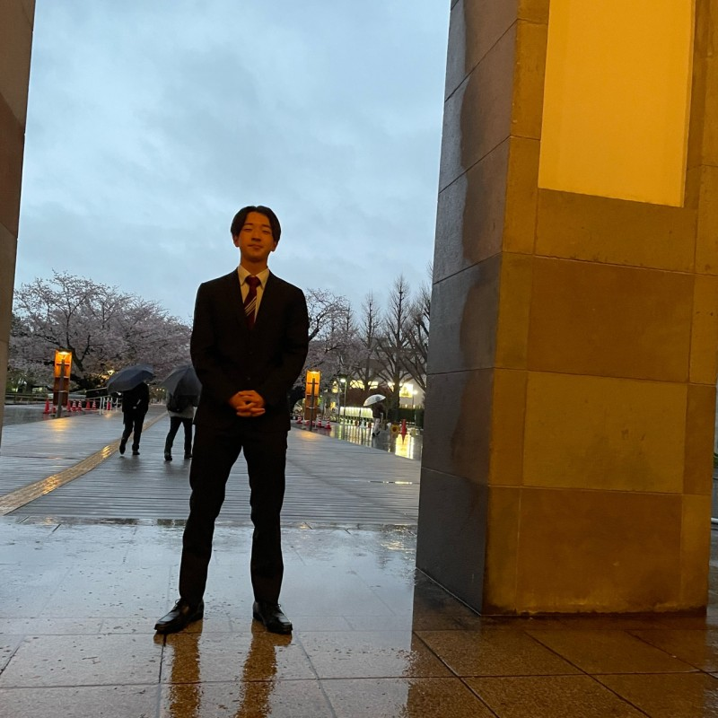

WORKS
学習塾「東工ゼミ」 ホームページ制作
Design / WordPress

村田研究室プロジェクト［大学授業課題］
Research / Network
高安研究室プロジェクト［大学授業課題］
Research / Machine Learning
アセンブリ言語［大学授業課題］
Programming / Assembly
コンパイラ構成［大学授業課題］
Programming / Compiler
ソフトウェア設計と品質［大学授業課題］
Programming / Software Design
機械学習［大学授業課題］
Programming / Machine Learning
プログラミングと数値解析応用［大学授業課題］
Programming / Numerical Analysis
並列プログラミング［大学授業課題］
Programming / Parallel Computing
手続き型プログラミング発展［大学授業課題］
Programming / Procedural Programming
SKILL
プログラミング言語
C言語（3年）、Python（3年）、Java（1年）、C++（6ヶ月）、MATLAB（6ヶ月）、verilog（6ヶ月）、アセンブリ言語（6ヶ月）、Racket（3ヶ月）、SQL（3ヶ月）、R言語（3ヶ月）、HTML（3ヶ月）、CSS（3ヶ月）、JavaScript（3ヶ月）
研究分野
画像処理、機械学習、コンピュータビジョン、大規模言語モデル
資格・語学
TOEIC 840点（2025年3月）、TOEFL-ITP 573点（2024年5月）、普通自動車第一種運転免許（AT限定）

インターン・実務経験
株式会社Precious Analytics（2024年10月～現在）で長期インターンとしてデータ分析・システム開発に従事。
ABOUT

東京工業大学（現東京科学大学）情報理工学院情報工学系に所属しています。主にプログラミングやネットワーク技術について学んできました。GPA：3.72
現在は金崎研究室に所属し、画像処理と機械学習を専攻しています。特に、コンピュータビジョンの分野に関心があり、映像や空間認識に関わる技術を中心に学んでいます。
現在の研究テーマは、全天球映像を入力とする大規模言語モデルの開発です。全天球映像を用いてシーン記述や空間文脈理解を行う大規模言語モデルの構築手法を研究しています。
また、東京科学大学フットサル部Tokyo Tech.に所属しています。
・2022-2023：FFCカレッジフットサルリーグ２部優勝、１部昇格
・2023-2024：東京都フットサルリーグ準優勝、関東フットサル大学リーグ昇格
・2024-2025：東京都フットサルリーグ準優勝
チーム一丸となって戦術面のコミュニケーションや身体面のケアを行い、日々の練習に取り組んでいます。
趣味は体を動かすこと、お笑い、アニメ鑑賞です。